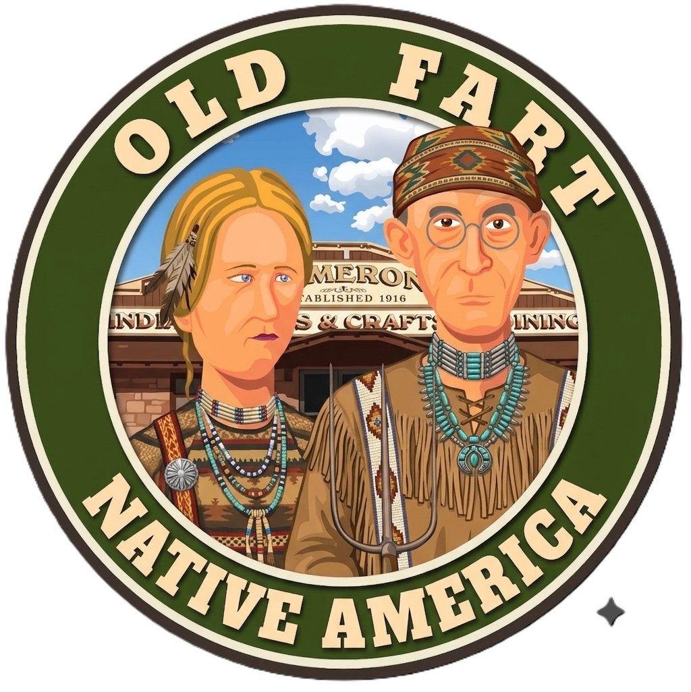
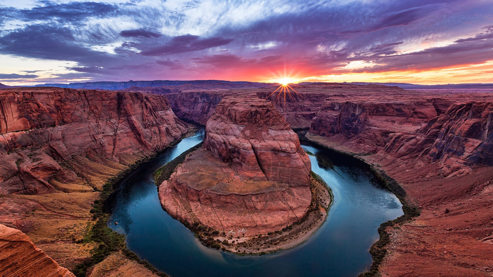

🍳 Breakfast
In Room or Harvey House Cafe
Grab something in your room or enjoy breakfast at the Harvey House before making your final farewell to the South Rim.
🍳 Harvey House Menu
Grand Canyon → Cameron → Page • Friday, August 7, 2026

Today we bid farewell to the Grand Canyon and head toward another spectacular canyon landscape.
Along the way we'll stop for lunch at one of the Southwest's best-known trading posts before arriving in Page for an evening visit to Horseshoe Bend, one of Arizona's most photographed overlooks.
🍳 Breakfast in your room or at the Harvey House Cafe.
🚶 Take one last stroll along the South Rim.
🍳 Harvey House Cafe MenuDepart via Desert View Drive en route to Cameron (approx. 1 hour 15 minutes without stops).
OPTIONAL STOP: Desert View Watchtower
Before leaving the park, consider one last stop at Desert View. Recognized as a National Historic Landmark and constructed in 1932, the Watchtower provides a unique perspective of the eastern Grand Canyon and a distant glimpse of the Colorado River's transition from Marble Canyon into the broader expanse of the Grand Canyon.
Enjoy lunch at one of Arizona's most famous trading posts.

House Specialty: Navajo Tacos. If you've never had one... today is your chance.
After lunch, browse Native American jewelry, pottery, rugs, and handcrafted souvenirs.
🌮 Cameron Trading Post RestaurantApproximately 1 hour 15–30 minutes driving time.
Estimated Arrival: 3:00–4:00 p.m. Check-in at Hampton Inn & Suites Page – Lake Powell. Relax for a while before heading back out for tonight's adventure.
A social media darling and one of Glen Canyon's most recognized and visited locations.
The overlook is reached by a 1.5-mile (2.4 km) round-trip walk on a hardened/paved path.
🚻 Use the restrooms at the parking area before starting (none on the trail).
💧 Bring water and wear comfortable shoes.
🏃 Leave the sprint to the overlook to people under thirty.
🌅 Sunset: 7:28 p.m.

After two days of national park dining, Bonkers is a welcome change of pace. Don't let the name fool you—it's one of Page's most consistently recommended restaurants, serving hearty steaks, pasta, seafood, burgers, and comfort food in a relaxed atmosphere.
It's exactly the kind of place you'll appreciate after a full day on the road and an evening at Horseshoe Bend.
🍽️ Bonkers Restaurant Menu 🏆 Best Restaurants in Page (TripAdvisor)
In Room or Harvey House Cafe
Grab something in your room or enjoy breakfast at the Harvey House before making your final farewell to the South Rim.
🍳 Harvey House MenuCameron Trading Post
Historic spot along the Little Colorado River known for its hearty Navajo Tacos and Southwest cuisine.
🌮 View MenuBonkers Restaurant – Page, AZ
Steaks, seafood, pasta, and comfort food in a relaxed atmosphere.
🍽️ Bonkers MenuPage, Arizona
After two nights inside Grand Canyon National Park, we return to the familiar comforts of civilization.
Air conditioning. A complimentary breakfast. Take some time to relax before heading to Horseshoe Bend.
Estimated arrival: 3:00–4:00 p.m.
🏨 Visit Hotel WebsiteIn August, late-afternoon sightseeing usually means slightly cooler temperatures, beautiful golden-hour lighting, and one less excuse to marinate yourself in sunscreen.
That does not mean you can skip the water.
Horseshoe Bend is exposed desert terrain with very little shade. Bring more water than you think you'll need.
The desert has never once apologized for being hot.
Horseshoe Bend is one of those places that looks familiar before you arrive.
You've seen it in advertisements. Computer screensavers. Social media posts from people pretending they discovered it.
Tonight... you get to stand there yourself.
OFT Road Songs & Roadside Mythology.
Featuring everything from "East Bound and Down" to "Chevy Van."
🎧 Listen to Today's PlaylistSleep in. Enjoy a leisurely breakfast. Then get ready for one of the most spectacular guided tours of the entire trip.
Tomorrow we enter Antelope Canyon... where the sandstone walls twist, glow, and close in around us.
The canyon walls are about to get a whole lot closer.

An actual example of what it has been like for a travel writer and an AI moderator to plan this guide.
JOHN: Memo to me. We need "Chevy Van" by Sammy Johns in the road songs playlist.
JACOB: Absolutely. “Chevy Van” by Sammy Johns belongs on the OFT road-songs playlist.
It may be less road-trip anthem than 1970s van encounter, but that has never disqualified anything from an OFT playlist.
JOHN: They sing about making love in their Chevy Van, which is so NOT OFT that it's classic OFT!
JACOB: 😂 Exactly! That's why it works.
If the playlist were trying to be historically accurate to your trip, I'd question it.
But OFT playlists have never been just about geography. They're about the mythology of the American road.
Think about what's already in there:
Now add: "Chevy Van."
The lyrics are all about carefree young romance...
...being listened to by four Medicare-eligible travelers in compression socks, driving a rented minivan toward Monument Valley.
The contrast is what makes it funny.
And, just for the record...
If anyone in that van starts reenacting the song, I'm changing the OFT slogan from:
GET OFF YOUR LAWN AND SEE THE WORLD WITH US!
to
PLEASE KEEP YOUR SEAT BELTS FASTENED AT ALL TIMES. 😄
JOHN: Or... IF THE VAN IS ROCKIN', DON'T BOTHER KNOCKIN'!
JACOB: 🤣 Now that is pure OFT. Because it works on two levels.
First, everyone recognizes the old bumper sticker: IF THE VAN'S A ROCKIN', DON'T COME A KNOCKIN'.
Then they look at who's actually in the van. Four retirees. Compression socks. Ibuprofen. A cooler full of Costco snacks. A meticulously planned itinerary. And they realize the only reason the van is rocking is because:
Or, if you wanted to make it really OFT:
IF THE VAN IS ROCKIN'... ...WE PROBABLY HIT A CATTLE GUARD.
or
IF THE VAN IS ROCKIN'... ...SOMEBODY'S LOOKING FOR THE IBUPROFEN.
We've spent the last two days looking across a canyon so enormous that the other side sometimes appeared unreachable.
Tomorrow... we walk into one.
Apparently, our vacation is gradually becoming more intimate with geology.